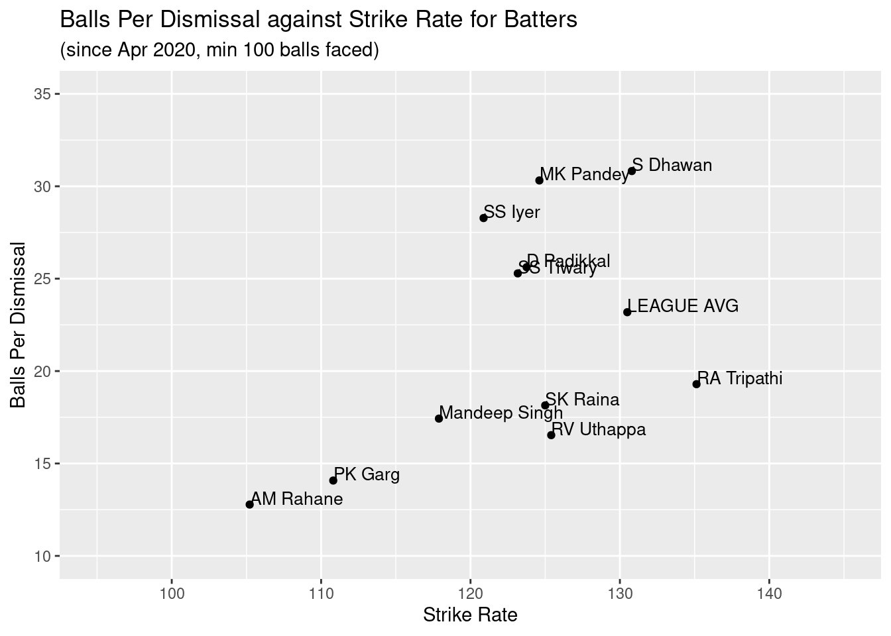
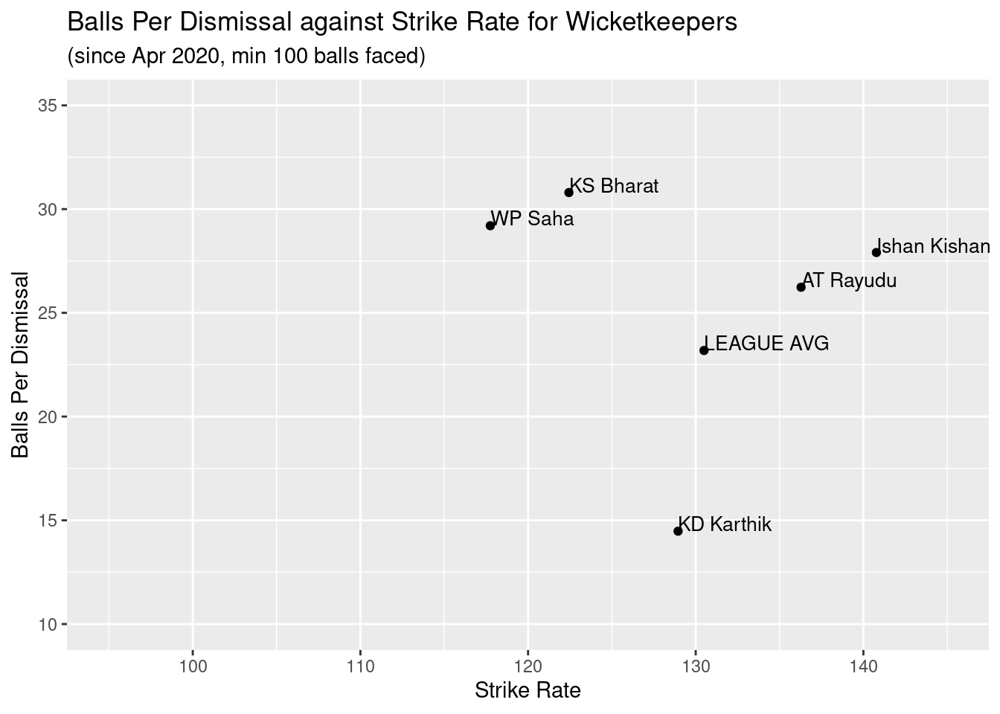
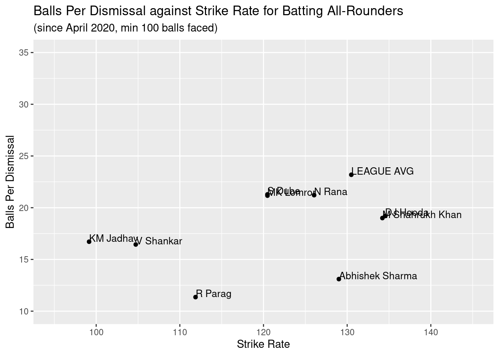
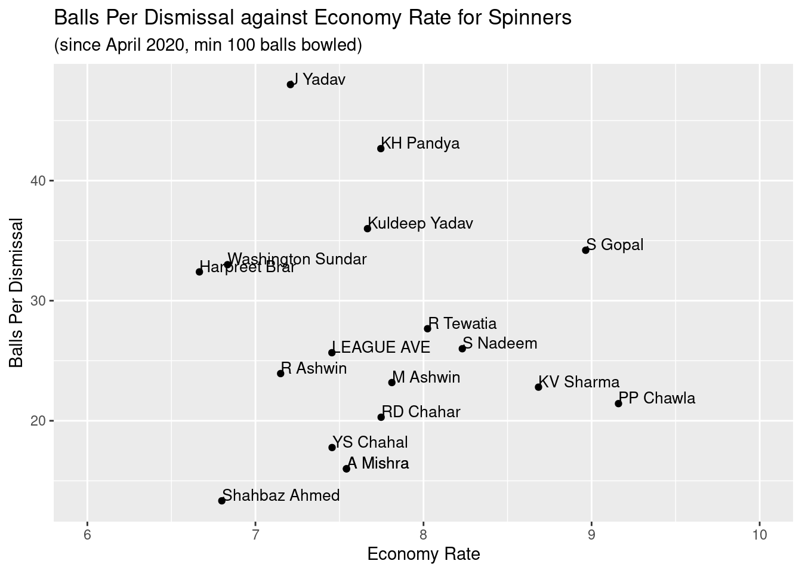
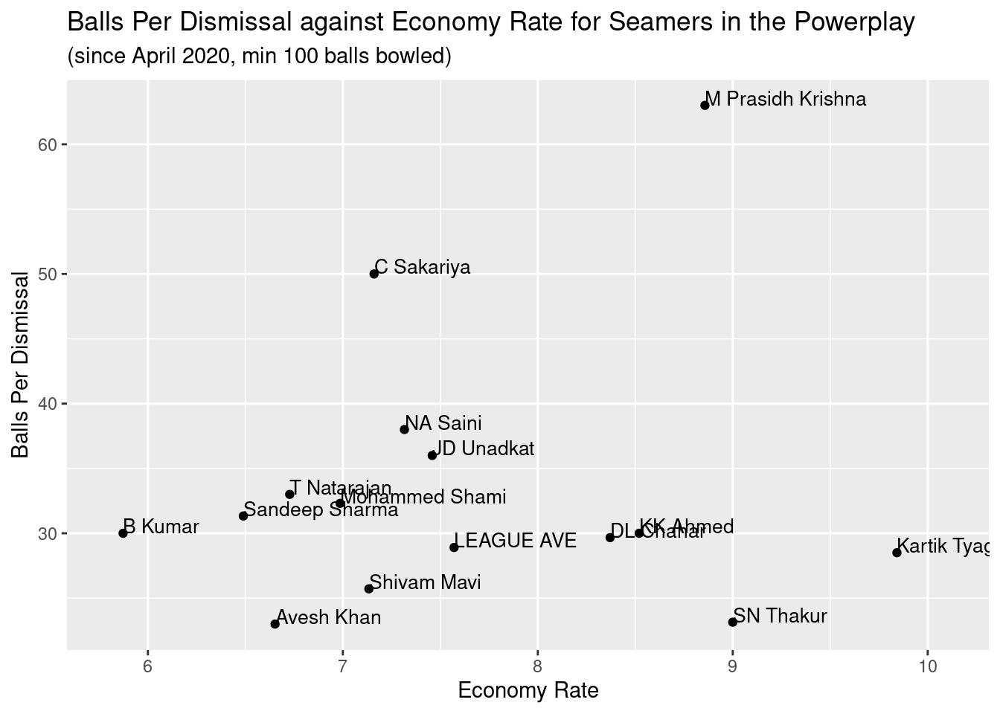
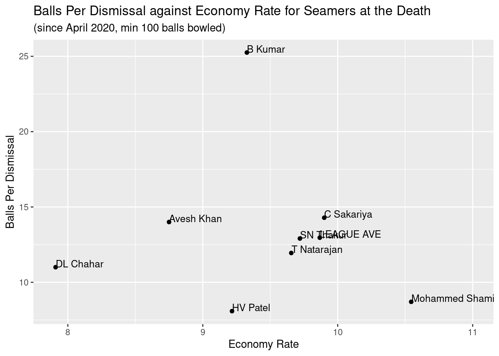

The auction for IPL 2022 gets underway on the 12th and 13th of February. Its being termed a “mega” auction as most teams need to pick entirely new squads - they all only have a maximum of 4 players at the moment, and the rest need to be picked in this auction. Therefore, there is lots of talk and debate about which franchises will want which players. With the quantity of players available at auction (590 in total, 370 from India and 220 overseas), some data analysis is useful to diagnose which players are valuable where other franchises might not think so.
In this analysis, I will look at the Indian players that are available. Starting with the homegrown players allows us to see what types of player Indian cricket is stronger/weaker in, and therefore you can choose your overseas players to compensate for these weaknesses.
Each player in the auction list is given a specialism (batsman, wicketkeeper, all-rounder or bowler), and I will go through the different specialisms one by one and analyse the relevant data for the players with this specialism. All analysis shall be done on post pandemic major T20 competitions data - this means that for the majority of the Indian players available, the only data that I have is the past two years of IPL data. We therefore have to be mindful of some small sample sizes in the results.
First, let’s take a look at the batters. Only looking at players who have faced at least 100 balls in the dataset, I plot their balls per dismissal against their strike rate. I also add the league average during this time for top 6 batters.
So from this graphic, we can see that Shikhar Dhawan is the best available anchor batsman, with a strike rate similar to the league average but a much better balls per dismissal rate. Other useful anchor batter appear to be Manish Pandey, Shreyas Iyer, Devdutt Padikkal and Saurabh Tiwary, who all have a balls per dismissal rate of at least 25 and a strike rate of at least 120. The only player in this category with a strike rate much higher than the league average is Rahul Tripathi - given that he is the only player in this category this could make him pretty valuable.
Let’s move on to the wicketkeepers now. They can be compared with the batters from above, but have the added value of keeping wicket. I won’t do any analysis on their actual keeping ability, as this is difficult to get accurate results without detailed data. So for now, let’s just look at their batting ability, and this can be compared with the players above. I will again add the league average for top 6 batters.

Ishan Kishan has been talked about as being the most expensive buy of the mega auction, and from his stats it’s not difficult to see why; these are better than anyone else’s including the specialist batters. Ambati Rayudu also has excellent statistics over the past two years, and expect to see a lot of franchises want him in their middle order despite his age. Whilst he has rarely kept wicket, the fact that he can makes him a useful addition to any squad because he can take the gloves if the first choice keeper is ever unavailable. KS Bharat will also be wanted by teams despite a lower strike rate than the previous two. A final note to add: Dinesh Karthik’s stats are a touch misleading - he usually comes into an innings late, and so has to attack immediately without having time to play himself in. A statistical model would allow you to control for this and compare his ability to others’ better.
The next category is Indian all-rounders. I’ve taken a look at the players list, and in my opinion they can all be categorised as either a stronger batter or a stronger bowler. We shall therefore compare the two categories separately. First let’s look at those who are stronger batters. We will look at both their batting and bowling abilities this time - we will compare their batting strike rate with their balls per dismissal to assess their batting ability like before, but we will also look at their bowling economy rate, bowling balls per dismissal and the average number of balls they bowl per game.

| Name | Matches | Balls Bowled | Avg Balls Per Match | Economy Rate | Balls Per Dismissal |
|---|---|---|---|---|---|
| N Rana | 32 | 24 | 0.8 | 8.8 | Inf |
| DJ Hooda | 17 | 102 | 6.0 | 8.5 | 51.0 |
| M Shahrukh Khan | 10 | NA | NA | NA | NA |
| R Parag | 18 | 49 | 2.7 | 12.2 | 49.0 |
| Abhishek Sharma | 16 | 120 | 7.5 | 7.8 | 20.0 |
| S Dube | 19 | 84 | 4.4 | 8.7 | 21.0 |
| V Shankar | 13 | 145 | 11.2 | 7.5 | 20.7 |
| MK Lomror | 7 | 42 | 6.0 | 6.7 | 42.0 |
| KM Jadhav | 10 | NA | NA | NA | NA |
If we look at the table of bowling statistics, we can see that a lot of these all-rounders are not… all-rounders. We don’t have any bowling data for Shahrukh Khan or Kedhar Jadhav, and not much for Nitish Rana or Riyan Parag either. These players should be evaluated on their batting alone.
Deepak Hooda and Shahrukh Khan both represent good aggressive Indian batters, and Hooda averages one over a game with his off spin too. Abhishek Sharma has a high-ish strike rate and bowls a lot too, which makes him valuable. Rana is an average batsman judging from the data - whilst this doesn’t make him sound great he will be sought after because there’s a lot that are worse than him. Shivam Dube and Mahipal Lomror are both okay if they can come cheap and play as your 6th batter/6th bowler.
Lets now look at the all-rounders that I have classified as being stronger bowlers. To begin with, lets just look at their batting statistics.
| Name | Matches | Inns | Balls Faced | Strike Rate | Balls Per Dismissal |
|---|---|---|---|---|---|
| R Ashwin | 33 | 11 | 76 | 106.6 | 15.2 |
| KH Pandya | 30 | 25 | 218 | 117.0 | 14.5 |
| HV Patel | 22 | 11 | 81 | 121.0 | 11.6 |
| Washington Sundar | 29 | 17 | 158 | 103.2 | 12.1 |
| Shahbaz Ahmed | 10 | 8 | 54 | 111.1 | 7.7 |
| Harpreet Brar | 8 | 5 | 58 | 110.3 | Inf |
| Shivam Mavi | 17 | 5 | 34 | 102.9 | 8.5 |
| KL Nagarkoti | 11 | 7 | 33 | 66.7 | 8.2 |
| R Tewatia | 28 | 22 | 330 | 124.2 | 20.6 |
| J Yadav | 7 | 3 | 26 | 130.8 | 13.0 |
Many of these players have nothing to suggest that their batting could be useful. Rahul Tewatia has the best batting stats, Krunal Pandya’s stats suggest that he could be useful, and Harshal Patel can hit a few boundaries later on in the innings. Jayant Yadav has a good strike rate but from a very small sample size and Harpreet Brar has never been out in his 58 balls faced. As for the rest - in my opinion their batting abilties’ shouldn’t be taken into account and they should be judged on their bowling alone. Some of them like Ravi Ashwin may be able to stick around, but if they are coming in at 8 or lower then this is of very little use to the team.
I will look at their bowling abilities’ now, and I will combine this with the specialist bowlers. I will do the analysis for pace and spin bowlers separately. Lets look at spinners first. We again include a league average for spinners over this period.

From this graph I can see Harpreet Brar and Washington Sundar as two good defensive spinners. I can also see two good aggressive spinners in Yuzvendra Chahal and Amit Mishra. Rahul Chahar and Murugan Ashwin are not too far from these two, whilst the more well known Ashwin is a good pick for an all round spinner in terms of wicket taking and economy rate. Rahul Tewatia, Krunal Pandya and Jayant Yadav are also valuable players given their batting abilities, but you wouldn’t like them to be the team’s main spinner. That’s ten Indian spinners that I have listed as good picks - along with the four Indian spinners that already have a team for the 2022 IPL this shows the strength in depth that India have in this department, and therefore an overseas spinner has to be elite in order to pick up a contract.
The final section of players that we will take a look at are pace bowlers. Upon exploring the data, I think it is best to look at and compare them in two main phases of the game that they operate: the powerplay and the death. Be mindful that the axis are different on both of these graphs below. I will include league averages for pace bowlers in both phases of the game as benchmarks.


Looking at the graph for the powerplay data, the only two players with better than average values for both economy rate and balls per dismissal are Avesh Khan and Shivam Mavi. Bhuvneshwar Kumar leads the way in terms of economy rate and is the only player to go at better than a run a ball in this period, with Sandeep Sharma, T Natarajan and Mohammed Shami all going at better than 7s. Whilst Shardul Thakur goes at 9 runs per over in this phase of the game, he does have the best balls per dismissal rate.
As for the death overs, the most important metric here is economy rate because wickets are not as important compared to earlier in the game. Deepak Chahar leads the way with a very impressive economy rate of less than 8, about 2 runs better than the league average. This is actually not what I expected - Deepak Chahar is renowned to be a bit of a powerplay specialist with the ball, yet over the past two years the data shows that he has been better at the death. Avesh Khan is the only player with an economy rate of less than 9, whilst Harshal Patel and T Natarajan are both better than the league average in both of the measures.
That completes the final category of Indian players to look at in the auction pool. Judging by the analysis above, there are a few valuable picks for each category. Whilst these are very basic statistics and so need to be taken with a pinch of salt, it is an easy starting point and appears to be a good one since a lot of the graphs and results align with our prior knowledge of the players.
In summary, my list of data driven picks from the Indian contingent are as follows:
- Anchor batters: Shikhar Dhawan
- Aggressive batters: Ishan Kishan, Ambati Rayudu, Rahul Tripathi, Deepak Hooda, Shahrukh Khan
- Batting all-rounders: Abhishek Sharma
- Spin bowling all-rounders: Krunal Pandya, Rahul Tewatia, Jayant Yadav
- Aggressive spin bowlers: Yuzrendra Chahal, Amit Mishra
- Defensive spin bowlers: Harpreet Brar, Washington Sundar
- Powerplay pace bowlers: Avesh Khan, Shivam Mavi, Bhuvneshwar Kumar
- Death pace bowlers: Avesh Khan, Deepak Chahar, Harshal Patel, T Natarajan